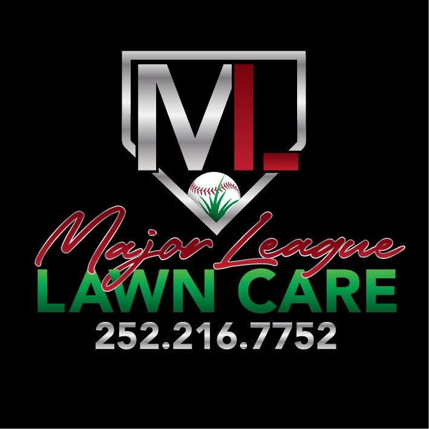

Mowing & edging
Regular cuts with clean, sharp edges.
Ask about mowing & edging →
Major League Lawn CareDependable mowing, edging and mulch work around Grandy and the Currituck Outer Banks mainland.
Regular cuts with clean, sharp edges.
Ask about mowing & edging →Fresh mulch spread and beds tidied up.
Ask about mulch beds →Residential yards and business properties kept welcoming.
Ask about home & office lawns →Brandon is very professional, comes on time, does great work and is very polite.
Our office lawn is well kept and welcoming for clients, and he is always responsive and courteous.
Serving Grandy, NC and nearby. We come to you.
Call nowEmail majorleaguemowing40@gmail.comFacebook page| Please call for current hours. |